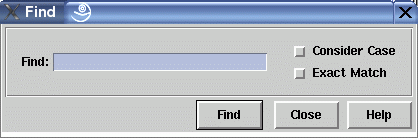

Find Dialog Window
This dialog window is used to find nodes in a graph that match a specified text string. The string has to be entered in the "Find" field of the dialog. Two search options are available: "Consider Case" to distinguish between upper and lower case letters and "Exact Match" to ignore nodes where the entered string appears as a substring. Both options are not activated by default, so you have to select the corresponding check buttons to get the described behavior.
After typing the text, the search can be started with the "Find" push button. This will not close the window. If exactly one graph node is selected, then the search starts after this node, otherwise at the topmost and leftmost node of the graph visualization. The operation is looking at each node of a level from the left to the right and continues with the next level by going from top to down. As soon as the text of a node (given by the node's attribute OBJECT) matches the specified string, the search stops and the found node is selected. Movement from the old to the new node is shown with animation which can be switched off or controlled in speed with menu Options/General Settings.... When no node of the graph matches the entered string, the search will be stopped after reaching the start node again and the user will hear a beep.
Dialog Elements of the Find Window
-
Find (text entry field)
In this field, you have to enter the text of the node you are looking for. Wildcards are not supported, so characters like * or ? do not have a special meaning. Instead, you can switch between exact and partial match with the "Exact Match" check button. -
Consider Case
Select this check button when upper and lower case letters should be distinguished from each other while performing the search. -
Exact Match
Select this check button when you do not want to find nodes with a text containing the string you are looking for as a substring. -
Find
Push button to start the search by looking for a node that matches the string displayed in the text entry field. -
Close
Push button to close the find dialog without performing any action. -
Help
Push button to start the online help system with this page.